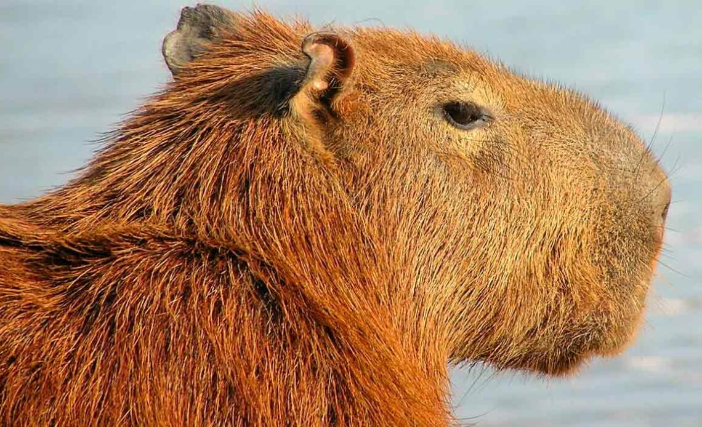
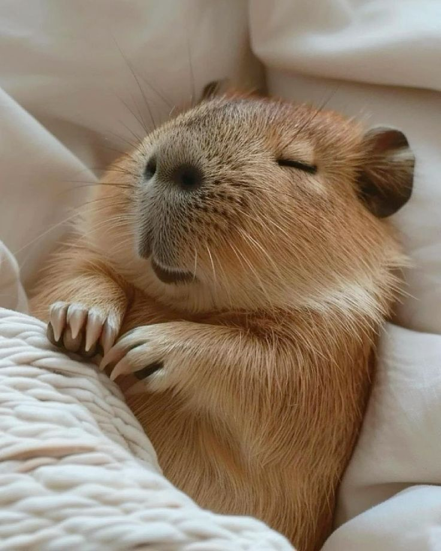
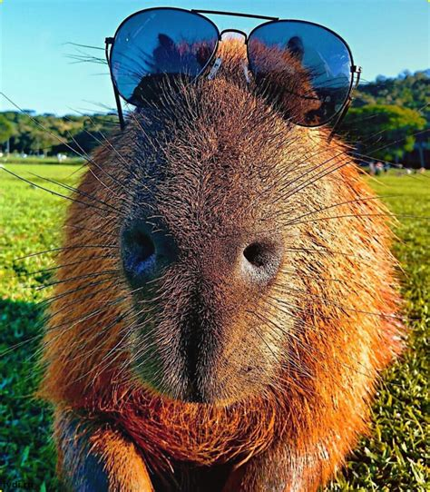

As capivaras são os maiores roedores do mundo e são excelentes nadadoras! 🐾 Elas conseguem ficar vários minutos debaixo d'água para fugir de predadores e podem até dormir dentro da água, deixando apenas o focinho para fora. Além disso, são animais muito sociáveis e costumam viver em grupos, demonstrando um comportamento tranquilo e amigável. Curiosidade extra: As capivaras possuem patas com pequenas membranas entre os dedos, que funcionam como nadadeiras e ajudam a nadar com facilidade! 💚



As capivaras são herbívoras! Sua alimentação é composta principalmente por: - 🌱 Grama e capim. - 🍃 Folhas e plantas. - 🌿 Vegetação aquática. - 🌾 Algumas plantas encontradas nas margens dos rios.
ir para proxima pagina